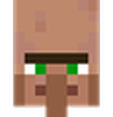
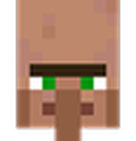

Minecraft é um dos jogos eletrônicos mais vendidos de todos os tempos e aclamado pela crítica
Game of the Year (Jogo do Ano): Minecraft ganhou vários prêmios de Jogo do Ano de diferentes organizações, incluindo da NAVGTR Corp. em 2012.
Markus Alexej Persson, conhecido como Notch, nasceu em 1º de junho
de 1979 em Estocolmo. É um desenvolvedor sueco famoso por criar
Minecraft, o jogo mais vendido da história, e por fundar a Mojang
Studios em 2009.
CRIATURAS PACÍFICAS
 


CRIATURAS NEUTRAS


CRIATURAS HOSTÍS


Em 2012, passei por um momento muito difícil da minha vida, meus pais se separaram. Nessa mesma época conheci o Minecraft e comecei a jogar com alguns amigos.
Minecraft fortaleceu nossa amizade e fez ela ir além da tela, virando parte da vida real.
Hoje continuo jogando, e tenho a melhor companhia que eu poderia pedir: minha namorada Giovanna.
 1.png)

O Rezende foi um dos primeiros da era Minecraft, o maior youtuber das séries machinimas
O edukof foi o youtuber que mais acompanhei, um dos maiores influenciadores de Minecraft do Brasil